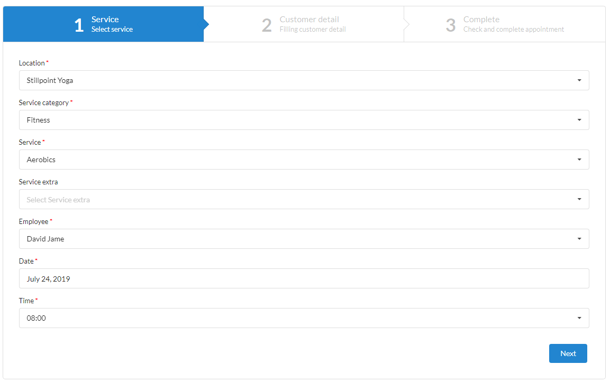
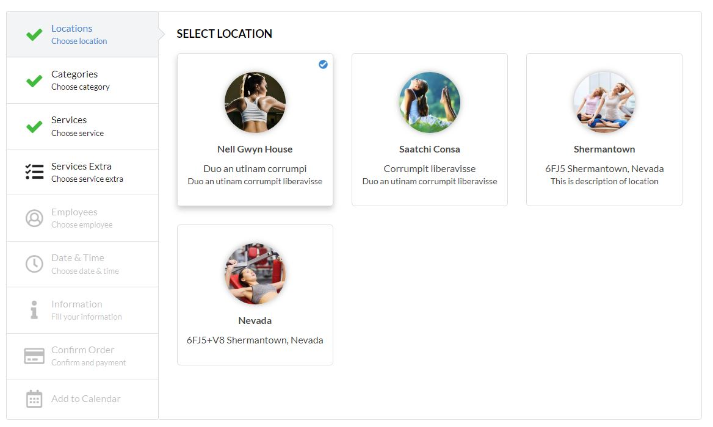
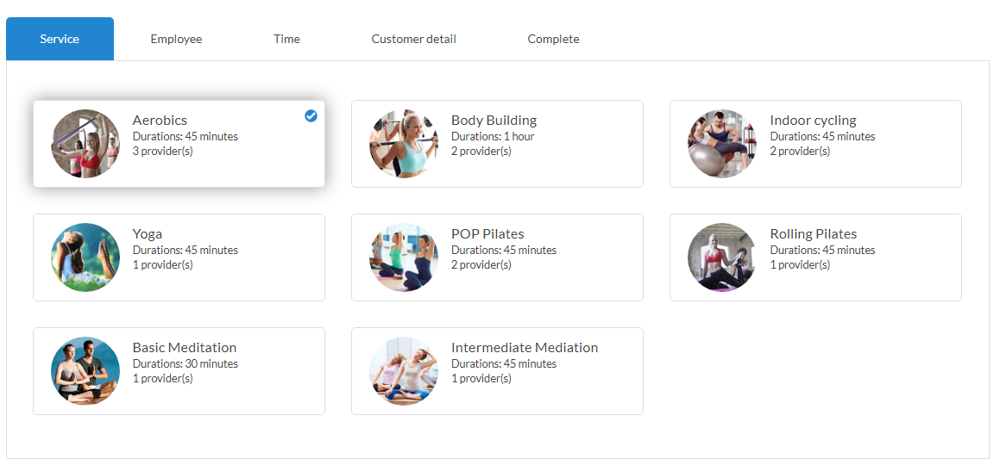
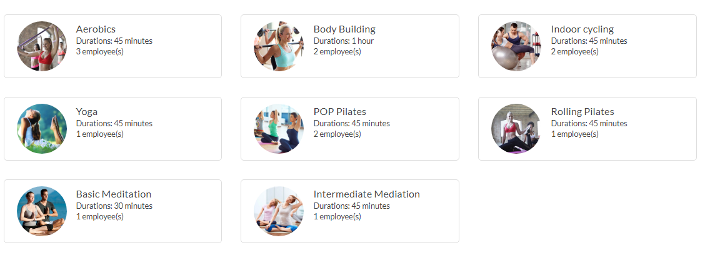
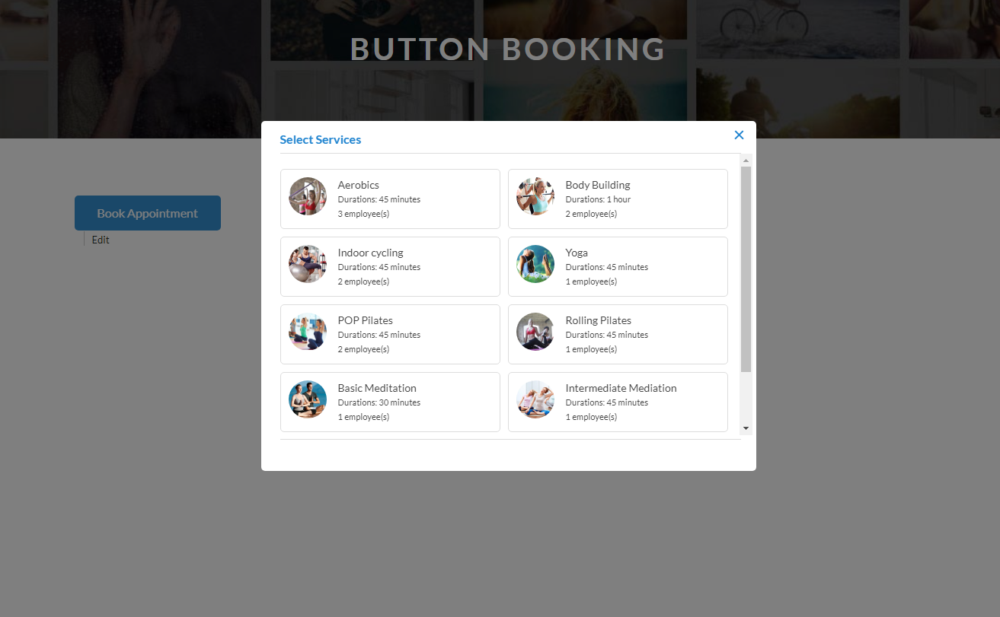

How to use shortcode at frontend
FAT Service Booking have six layouts for booking form: Step, Step Vertical, Booking form with tab, Booking form no tab, One service, Popup and one service&provider. Corresponding to each layout it will have a shortcode to display the form, you only copy and paste shortcode to page content to display booking form
- Step layout: To use this layout, please copy and paste this shortcode [fat_sb_booking]
- Step vertical layout: To use this layout, please copy and paste this shortcode [fat_sb_booking layout="step-vertical"]
- Booking form with tab: To use this layout, please copy and paste this shortcode [fat_sb_booking layout="services"]
By default, the plugin will hide the service categories and location. If you want display service categories and location, you need add parameter below:
- show-category="1" : This is the parameter to display service categories, and shortcode is [fat_sb_booking layout="services" show-category="1"]
- show-location="1" : This is the parameter to display location, and shortcode is [fat_sb_booking layout="services" show-location="1"]
- Booking form with tab: To use this layout, please copy and paste this shortcode [fat_sb_booking layout="services-no-tab"]
By default, the plugin will hide the service categories and location. If you want display service categories and location, you need add parameter below:
- show-category="1" : This is the parameter to display service categories, and shortcode is [fat_sb_booking layout="services" show-category="1"]
- show-location="1" : This is the parameter to display location, and shortcode is [fat_sb_booking layout="services" show-location="1"]
- One Service: If you have one service for your site, please use this layout by copy and paste this shortcode [fat_sb_booking layout="one-services"]
- Popup: If you want to display booking form as popup, please use this layout by copy and paste this shortcode [fat_sb_booking_button]. It will be display button booking, if you want customize button (ex: color, title ...) you can add parameters (label, background_color, text_color, font_size) to shortcode.
Exam: [fat_sb_booking_button label="Booking now" background_color="#2185d0" color="#fff" font_size="14px"]
- Date first: This shorcode allows customers to choose the date, time and service they want to book. The system will filter out the list of available employees during that period.
To use this layout, please copy and paste this shortcode [fat_sb_booking layout="date-first"]

Step booking form.

Step vertical booking form.

Booking form with tab.

Booking form no tab.

Booking popup.
Date first shortcode.